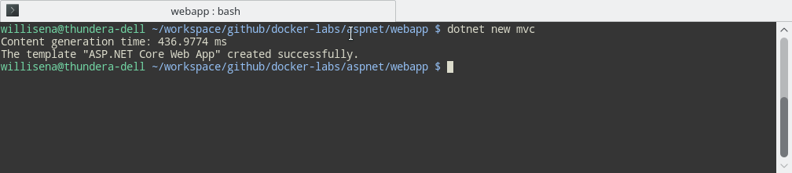
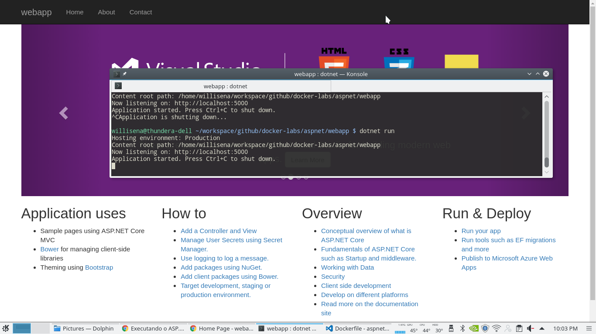
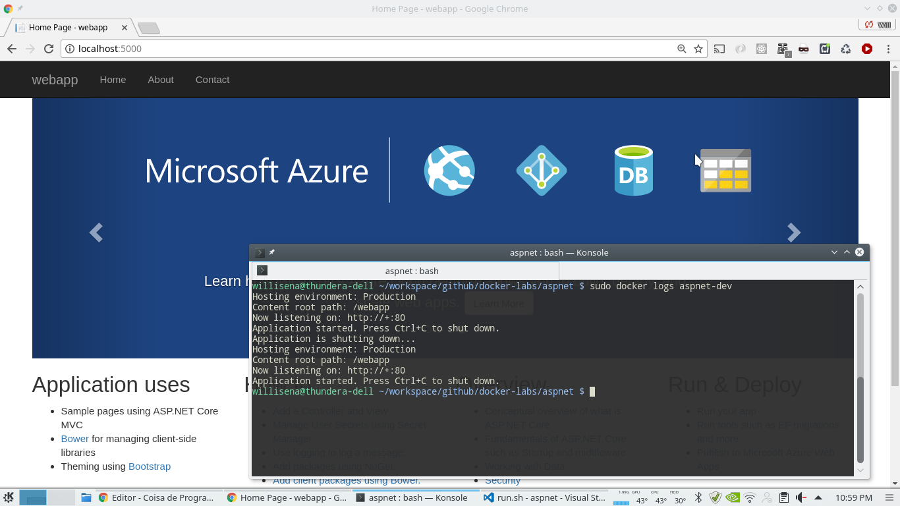

Docker no windows?
Tenho acompanhado artigos relacionados ao Windows no mundo Docker, anteriormente não tive sucesso tentando utilizar o boot2docker no Windows 8.1, acabei encontrando uma certa dificuldade que não encontrei no Linux e desisti.
Pois bem a situação mudou entre o Windows e Docker, hoje temos containers como Windows Server Core, build em ASP.NET Core e até o SQL Server...
Vejam com seus próprios olhos esta grande iniciativa Docker Hub - Microsoft Account.
A iniciativa possibilita a utilização de ferramentas consolidadas no ambiente Linux e no Mac.
Já configurou o Docker?
Bom se você ainda não configurou o Docker em sua estação de trabalho veja este artigo de introdução:
Instalando o .NET Core
Para instalar siga as instruções deste site abaixo:
https://www.microsoft.com/net/download/core
Baixando a imagem
Primeiro passo é baixar a imagem pronta do Docker para ASP.NET Core, abra seu terminal:
docker pull microsoft/aspnetcore
Configurando o container
Crie uma pasta para hospedar seus arquivos e crie o Dockerfile:
FROM microsoft/aspnetcore
WORKDIR /webapp
COPY /webapp/publish /webapp
RUN ls -la /webapp/*
ENTRYPOINT [ "dotnet", "webapp.dll"]
Inicializando o projeto
O dotnet cli proporciona a criação por scaffoldings utilizando o comando new, crie uma pasta chamada webapp e digite o comando abaixo:
dotnet new mvc

Restaurando os pacotes
Na pasta do projeto webapp será necessário restaurar os pacotes, que são dependências do projeto para execução:
dotnet restore
Executando a aplicação
Antes de executar a aplicação vamos rodar um build:
dotnet build
Agora podemos executar, será aberto uma aplicação na porta 5000.
dotnet run

Publicando a aplicação
Agora que a aplicação está rodando normalmente, vamos realizar o publish:
dotnet publish -o ./publish
Compilando a imagem Docker
Execute o comando abaixo para criação da imagem Docker aspnet-dev:
sudo docker build -t aspnet-dev .
Este processo pode demorar um pouco que tal um café?
A imagem aspnet-dev será criada e possibilitará a criação do container. Para confirmar se o processo ocorreu com sucesso, digite o comando abaixo para listar as imagens disponíveis:
sudo docker images
Executando o Docker Container
Execute o comando abaixo para criação e execução do Docker container aspnet-dev:
sudo docker run --name aspnet-dev -d -p 5000:80 aspnet-dev

Para manter a aplicação rodando na porta 5000, foi feito um Port Forwarding recurso disponível no Docker. A aplicação no modo release abre a porta 80.
Fim
Todos estes procedimentos estão registrados no Github:
Pronto com o Docker Container ASP.NET Core rodando em um server Linux, agora tudo é possível para um programador .NET.